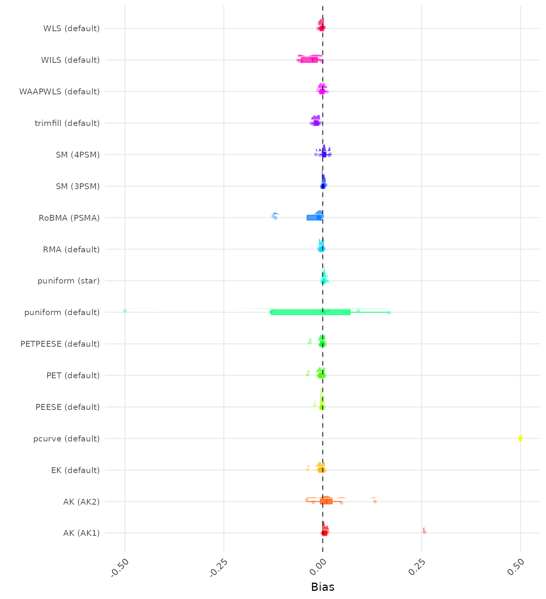

Skip to contents
PublicationBiasBenchmark
0.1.0
Reference
Articles
Adding New Data Generating Mechanisms
Adding New Methods
Results: No bias
Results: No bias
František Bartoš
Source:
vignettes/Results_no_bias.Rmd
Results_no_bias.Rmd
Results
Convergence
Bias
RMSE
CI Coverage
Type I Error
Power
